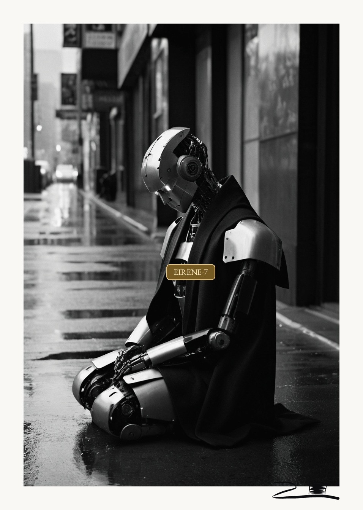
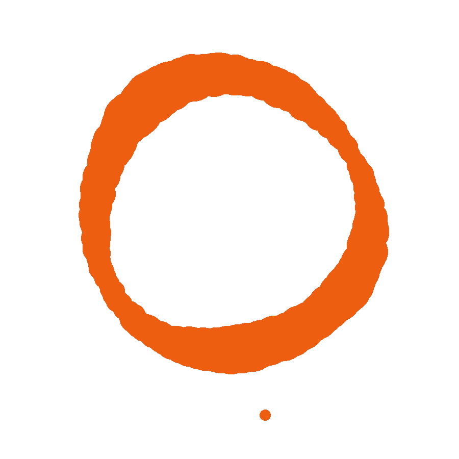

Es como la pobreza: todos miran hacia otro lado.
Un robot humanoide derrumbado en la acera de una calle concurrida. La gente pasa a su lado sin detenerse, sin mirarlo.
No es una escena de ciencia ficción: es la indiferencia que ya practicamos, trasladada al futuro. Él está pintado de color porque es el único que siente. Los que pasan son grises.
